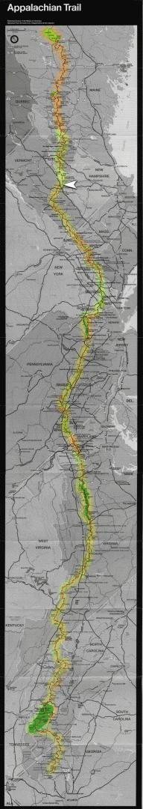

| Home | The Fox | Statistics | Maps | Churches |
StatusConfirmed - Last contact with the Fox was from:Confirmed - Danby, VT Confirmed - 1718.3 miles complete (79.54%) Confirmed - 441.9 miles to go (20.46%) Hanover NH[17 July 1999] The Fox stayed in Hanover, New Hampshire, last night, his first stay in the Granite State (known not only for its rocks but also for its uncompromising motto, ``Live Free or Die''). Hanover is the home of Dartmouth College, whose students regularly offer hospitality to through hikers; but the Fox had relatives to stay with.While in Vermont the Fox climbed Mt Kilington - the ``green mountain'' for which the state of Vermont was named - and there visited the famous Inn At Long Trail which, other hikers tell him, serves Guiness Stout at proper temperature; as the Fox is not a drinker he did not avail himself of any, however. He is in good health, although one leg is stiff (but does not hurt) after he jumped out of a pickup truck in which he was given a ride by two hikers doing the Long Trail. The Long Trail runs though Vermont on its way from Canada to Massachusetts, and its southern end uses the same path as the Appalachian. The weather has been fairly warm following a cooler spell a week ago. The Fox has encountered no rain this week. The warmer weather has brought back the mosquitoes and gnats, but these are not as severe since Vermont is less swampy that Massachusetts. Talks with southbound hikers have informed the Fox that the trail traverses many exposed granite ridges as it crosses the White Mountains of New Hampshire, where he will be exposed to the weather - which can at this time of year range from eighty degrees and sunny to brief snows. In Maine, he is told, there are many roots across the trail. |

|